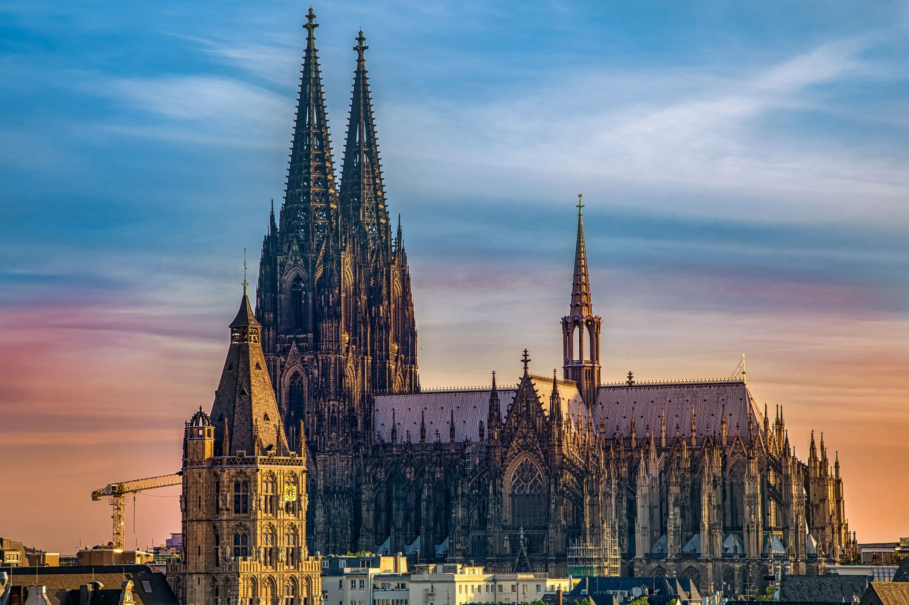

O mě
Jmenuji se Láďa. Baví mě hlavně počítače a koukat na anime. IT studuji, protože mě IT baví a jde mi to nejlíp. Na práci s rukama moc nejsem.
Moje oblíbená hra je série Spider-Man her pro PlayStation, můj oblíbený film je série Harryho Pottera a z hudby poslouchám převážně metal a nightcore.
Můj cíl je založit si vlastní firmu.
V IT mi jde správa Windows a Linux počítačů, serverů a programování webů.
| Moje oblíbené hry | Moje koníčky | Technologie, které chci umět | Moje dovednosti |
|---|---|---|---|
| Spider-Man | Počítače | C# | Správa Windows a Linux počítačů |
| Minecraft | Anime | Kotlin | Správa serverů |
| Arknights: Endfield | Turistika - Gotické stavby | Swift | Programování webů |
| Euro Truck Simulator 2 | Poslouchání metalu | PHP | Flashování android zařízení |

Katedrála sv. Petra v Kolíně nad Rýnem